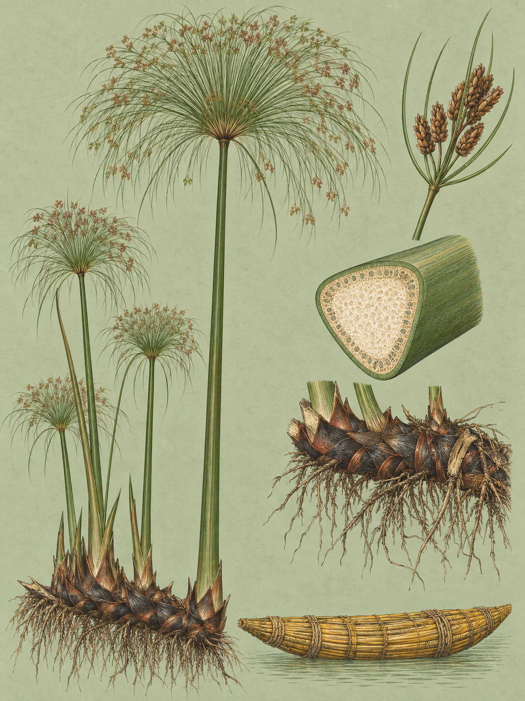

RIFT VALLEY
Cyperus papyrus
Swahili: „Ndago“

Wenn die Sonne den Bestand erwärmt, steigt Dampf aus dem Ufersaum. Er kommt nicht aus dem offenen Wasser, sondern aus dem Papyrus. Die Verdunstung der Bestände entspricht 200 bis 250 Prozent der potenziellen Verdunstung einer vergleichbaren freien Wasserfläche. Ein Saum also, der den Naivashasee mehr Wasser kostet, als offenes Wasser ihn kosten würde. Warum duldet er ihn? Die Antwort liegt dort, wo der Malewa einmündet, und sie hat mit dem Dampf nichts zu tun.
Vorher lohnt ein Blick nach oben. Unter durchschnittlichen Bedingungen wird die Papyrus-Staude 4 bis 5 Meter hoch. Am Naivashasee, der 1.800 Meter über dem Meer liegt, sind bis zu 9 Meter dokumentiert. Der Halm ist dabei ein einziges, ununterbrochenes Internodium, das längste bekannte im gesamten Pflanzenreich. An der Basis misst er 5 bis 18 Zentimeter, und auch der Maximalwert von 18 Zentimetern wurde hier gemessen, in der Größenordnung einer aufgespannten menschlichen Hand. Der Querschnitt ist dreieckig mit abgerundeten Kanten, die Oberfläche glatt und grün, denn der Halm ist das primäre Photosyntheseorgan. Blätter tragen fruchtbare Triebe fast keine, nur papierartige, rotbraune bis schwarze Scheiden um die unteren 50 Zentimeter. Oben öffnet sich eine Dolde von 30 bis 80 Zentimetern Durchmesser, aus der 50 bis 360 ungleiche, biegsame grüne Strahlen von 10 bis 40 Zentimetern Länge ausfahren. Bei jungen Pflanzen leuchten sie grün und erinnern in ihrer Form an einen Federwisch. Bei älteren Exemplaren färben sich die Blüten- und Fruchtstände braun, und die Dolden spreizen sich zu einer kugeligen Form auf.
Weil der Halm keine Knoten besitzt, ist das schwammige, cremeweiße Mark in seinem Inneren frei von harten Partikeln. Das hat historisch die Verarbeitung zu Papier begünstigt, und daher kommt der Name. Carl von Linné stellte die Art 1753 in seinem Werk Species Plantarum auf Seite 47 auf. Die Gattungsbezeichnung Cyperus geht auf das altgriechische kúperos zurück, in der Antike ein Sammelname für eine oder mehrere Arten der Sauergrasgewächse. Das Artepitheton stammt vom altgriechischen pápyros und bedeutet wörtlich „Papier“. Dass dieses Wort ägyptische Wurzeln habe, wird in linguistischen und historischen Fachkreisen häufig angenommen, von einigen Etymologen aber als Volksetymologie eingeordnet. Der genaue Nachweis steht aus.
Zurück zum Malewa. Bevor der Fluss den offenen See erreicht, fächert er sich in ein verzweigtes Muster auf, und das Wasser zirkuliert unter den schwimmenden Papyrusmatten hindurch. Rhizome und Halme stehen dort so dicht, dass die Reibung die Fließgeschwindigkeit drastisch senkt. Was das Wasser an Schwebstoffen trägt, fällt aus und lagert sich im Sumpf ab. Das ist der erste Teil des Filters, und er ist reine Physik.
Der zweite Teil ist Stoffwechsel. Papyrus besitzt die Kranz-Anatomie, eine Anordnung der Zellen, die an den C4-Stoffwechsel gekoppelt ist. Zusammen mit den großen Lufthohlräumen im Halm erlaubt sie ein wirksames Recycling von Kohlendioxid und verhindert die ineffiziente Photorespiration. Das Ergebnis ist eine extreme Produktion: 40 Gramm Trockengewicht je Quadratmeter und Tag unter natürlichen Bedingungen, in Hydrokultur bis zu 125. Am Naivashasee summiert sich das auf 6,28 Kilogramm Trockenmasse je Quadratmeter und Jahr. Um so viel Masse aufzubauen, entzieht der Bestand dem durchfließenden Wasser Nährstoffe, in Spitzenzeiten bis zu 1.100 Kilogramm Stickstoff und 50 Kilogramm Phosphor je Hektar und Jahr. In den tieferen Schichten der Matten entfernen Mikroben zusätzlich Stickstoff aus dem System. Auf Sedimentation reagiert die Art auch in ihrer Wuchsform. Eine Studie von 2018 zeigte, dass sie bei hoher Sedimentation in dichte Klumpen wechselt, mit kürzeren Halmen und geringerem Durchmesser, während sie bei geringer Sedimentation spärlichere, weitreichendere Triebe bildet.
Gebunden bleibt das alles in der Pflanze. Erst wenn Halme absterben, geben sie die Nährstoffe wieder ab, über einen sehr viel längeren Zeitraum und oft organisch gebunden. Quantifiziert hat das der Ökologe John J. Gaudet, der von 1976 bis 1979 am North Swamp des Naivashasees arbeitete. Die Spitzenwerte der Stickstoffaufnahme ermittelte Brix 1994, die Berechnungen der Nettoprimärproduktion stammen von Jones und Muthuri aus dem Jahr 1997. Die Kette hält nur, solange die Matten schwimmen. Sinkt der Seespiegel, etwa durch Wasserentnahme für Landwirtschaft, stranden sie. Dann kommen Kaffernbüffel, Rinder und Menschen in eine Uferzone, die vorher unzugänglich war. Fraßdruck und Trittschäden zerstören die Struktur, der Filter fällt aus, und Sedimente und Nährstoffe strömen ungehindert in den See.
Der North Swamp war einmal eine geschlossene Papyrusfläche von 11,7 Quadratkilometern und ist heute stark fragmentiert. Eine Vergleichsstudie stellte die Jahre 1973/74 und 2009/10 gegenüber und fand in der Drawdown-Zone einen Verlust von 48 Prozent der Pflanzenarten. Papyrus verlor an diesen Standorten seine Fähigkeit, dauerhafte Randbestände zu bilden. Die Lücken besetzten Arten wie das Knöllchen-Zypergras (Cyperus rotundus) und die Gewöhnliche Kratzdistel (Cirsium vulgare), die das Keimen einheimischer Pflanzen durch ausgeschiedene Hemmstoffe aktiv unterdrücken. Wie schnell die Art zurückkommen kann, zeigte sich 1988. Nach drei Dürrejahren stieg der Seespiegel rasch um einen Meter, und auf dem gefluteten Boden keimte Papyrus explosionsartig. Dauerhaft stabilisieren konnte sich der Bestand trotzdem nicht, weil die großen Pflanzenfresser die jungen Triebe gleichzeitig dezimierten.
Ende September steht der See hydrologisch meist auf seinem Jahrestiefstand. Die Halme wachsen dann am langsamsten, im Jahresmittel sind es etwa 1,4 bis 2,5 Zentimeter am Tag. Das Absterben durch natürliche Alterung bestimmt das Bild: bis zu 64 Prozent der Halmmortalität gehen darauf zurück, weitere 19 Prozent auf Insekten und Nager. Wer trotzdem etwas sucht, sucht Vögel. An das dichte Halmgeflecht sind Arten gebunden, die außerhalb solcher Sümpfe nicht vorkommen, darunter die Papyrus-Grasmücke (Chloropeta gracilirostris), die die IUCN als „Vulnerable“ führt, und der Papyruswürger (Laniarius mufumbiri). Auch die Sitatunga-Antilope (Tragelaphus spekeii) nutzt die Zone als Rückzugsraum.
Der Dampf über dem Ufersaum ist keine Laune des Morgens. Er ist der Preis, den der See für seinen Filter zahlt, und er steigt, solange die Matten schwimmen. Wer Anfang Oktober nach den ersten Niederschlägen wiederkommt, sieht den Pegel steigen und aus den Rhizomen neue Triebe kommen.
Historisch ist die Nutzung tief verwurzelt, vornehmlich bei der Papierherstellung in der Antike: Das zellulosereiche Mark wurde in Streifen geschnitten und gepresst. Im heutigen Kenia erfolgt die Ernte hauptsächlich in der Subsistenzwirtschaft und auf lokaler kommerzieller Ebene. Im Viktoriaseebecken, etwa im Yala Swamp und in den Distrikten Siaya und Busia, verarbeiten Menschen die faserigen Außenschichten zu Matten, Körben, Seilen, Dächern und Fischreusen. 1998 wurden solche Flechtprodukte auf lokalen Märkten für 100 bis 350 Kenia-Schilling gehandelt. Weil die Stängel gut schwimmen, bündelt man sie in den Sumpfregionen zu Booten und Flößen. Getrocknete Halme und Rhizome brennen, allerdings mit sehr viel Rauch und Asche, weshalb sie fast ausschließlich in der lokalen Getränkeherstellung verwendet werden und kaum im Haushalt zum Kochen. Industriell dient das Material als Isolation unter Metalldächern, und in ostafrikanischen Flüchtlingscamps wird Papyrusmark mit Altpapier und Wasser zu Damenbinden verarbeitet. Das Mark ist außerdem essbar, roh, gekocht oder wie Zuckerrohr gekaut. Überliefert ist die Behandlung von Ödemen mit den Blättern, und in Uganda verwendet man die Asche des verbrannten Blütenstandes gegen Vaginal- und Rektalprolaps. Eine Untersuchung am Naivashasee zeigte, dass eine Ernte im Sechsmonatsrhythmus Biomasse, Halmdichte und Halmdurchmesser massiv zurückgehen lässt. Nachhaltig wird sie erst bei Zyklen von mindestens zwölf Monaten.
Wo und wann: Am Naivashasee die Uferbereiche beim Fisherman’s Camp, die ruhigen Lagunen an der Innenseite von Crescent Island und das verbliebene Mündungsdelta des Malewa, der historische North Swamp. Das Zeitfenster ist eng, etwa 06:15 bis 08:30 Uhr. Danach erwärmt die Sonne den Bestand, große Mengen Wasserdampf steigen aus den Matten, und die Luft flimmert so stark, dass lange Teleobjektive keine Schärfe mehr liefern. Warten lohnt sich vom Boot an der Sumpfkante, bis ein Vogel in den Randbereich der Dolden klettert, um dort Insekten in den fadenförmigen Strahlen zu jagen.
Brennweite: 150 bis 600 für die Vögel, weil der Sumpfboden eine Annäherung auf wenige Meter unmöglich macht. 100 bis 400 für größere Motive am Ufer oder aus unmittelbarer Bootsnähe. 45 mm oder 26 bis 60 für den dreieckigen Querschnitt, die schuppigen Rhizome und die Dolde. Verschlusszeit mindestens 1/1000 s bis 1/2000 s, denn der Halm wirkt im Wind wie ein Hebel.
Bild-Idee: Ein Papyruswürger im Randbereich einer Dolde, dahinter das tiefschwarze Innere des Sumpfes. Spotmessung auf den Vogel, sonst wird er unterbelichtet.